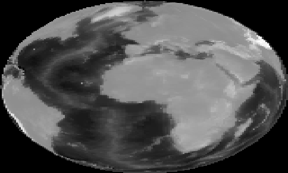
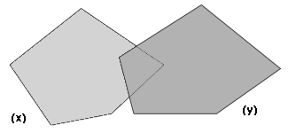

GIS Extension
This extension adds GIS (Geographic Information Systems) support to
NetLogo. It provides the ability to load vector GIS data (points,
lines, and polygons), and raster GIS data (grids) into your model.
The extension supports vector data in the form of ESRI shapefiles.
The shapefile (.shp) format is the most common format for storing and
exchanging vector GIS data. The extension supports raster data in the
form of ESRI ASCII Grid files. The ASCII grid file (.asc or .grd) is
not as common as the shapefile, but is supported as an interchange
format by most GIS platforms.
How to use it
In general, you first define a transformation between GIS data space
and NetLogo space, then load datasets and perform various operations
on them. The easiest way to define a transformation between GIS space
and NetLogo space is to take the union of the "envelopes"
or bounding rectangles of all of your datasets in GIS space and map
that directly to the bounds of the NetLogo world. See GIS General
Examples for an example of this technique.
You may also optionally define a projection for the GIS space, in
which case datasets will be re-projected to match that projection as
they are loaded, as long as each of your data files has an associated
.prj file that describes the projection or geographic coordinate
system of the data. If no associated .prj file is found, the
extension will assume that the dataset already uses the current
projection, regardless of what that projection is.
Once the coordinate system is defined, you can load datasets using
gis:load-dataset. This primitive
reports either a VectorDataset or a RasterDataset, depending on what
type of file you pass it.
A VectorDataset consists of a collection of VectorFeatures, each one
of which is a point, line, or polygon, along with a set of property
values. A single VectorDataset may contain only one of the three
possible types of features.
There are several things you can do with a VectorDataset: ask it for
the names of the properties of its features, ask it for its
"envelope" (bounding rectangle), ask for a list of all
VectorFeatures in the dataset, search for a single VectorFeature or
list of VectorFeatures whose value for a particular property is less
than or greater than a particular value, or lies within a given
range, or matches a given string using wildcard matching
("*", which matches any number of occurrences of any
characters). If the VectorFeatures are polygons, you can also apply
the values of a particular property of the dataset's features to
a given patch variable.
There are also several things you can do with a VectorFeature from a
VectorDataset: ask it for a list of vertex lists, ask it for a
property value by name, ask it for its centroid (center of gravity),
and ask for a subset of a given agentset whose agents intersect the
given VectorFeature. For point data, each vertex list will be a
one-element list. For line data, each vertex list will represent the
vertices of a line that makes up that feature. For polygon data, each
vertex list will represent one "ring" of the polygon, and
the first and last vertex of the list will be the same. The vertex
lists are made up of values of type Vertex, and the centroid will be
a value of type Vertex as well.
There are a number of operations defined for RasterDatasets as well.
Mostly these involve sampling the values in the dataset, or
re-sampling a raster to a different resolution. You can also apply a
raster to a given patch variable, and convolve a raster using an
arbitrary convolution matrix.
Code Example: GIS General Examples has general examples of
how to use the extension
Code Example: GIS Gradient Example is a more advanced
example of raster dataset analysis.
Known issues
Values of type RasterDataset, VectorDataset, VectorFeature, and
Vertex are not handled properly by export-world and
import-world. To save datasets, you must use the
gis:store-dataset primitive.
There is currently no way to distinguish positive-area
"shell" polygons from negative-area "hole"
polygons, or to determine which holes are associated with which
shells.
Credits
The primary developer of the GIS extension was Eric Russell.
The GIS extension makes use of several open-source software
libraries. For copyright and license information on those, see the
copyright section of the manual. The
extension also contains elements borrowed from My World GIS.
This documentation and the example NetLogo models are in the public
domain. The GIS extension itself is free and open source software.
See the README.md file in the extension/gis directory for details.
We would love to hear your suggestions on how to improve the GIS
extension, or just about what you're using it for. Post questions
and comments at the NetLogo Users
Group, or write directly to Eric Russell and the NetLogo team at
ccl-gis@ccl.northwestern.edu.
GIS primitives
set-transformation set-transformation-ds set-world-envelope set-world-envelope-ds world-envelope envelope-of envelope-union-of load-coordinate-system set-coordinate-system
load-dataset store-dataset type-of patch-dataset turtle-dataset link-dataset
shape-type-of property-names feature-list-of vertex-lists-of centroid-of location-of property-value find-features find-one-feature find-less-than find-greater-than find-range property-minimum property-maximum apply-coverage
coverage-minimum-threshold
set-coverage-minimum-threshold
coverage-maximum-threshold
set-coverage-maximum-threshold
intersects? contains? contained-by? have-relationship? relationship-of intersecting
width-of height-of raster-value set-raster-value minimum-of maximum-of sampling-method-of set-sampling-method raster-sample raster-world-envelope create-raster resample convolve
apply-raster
drawing-color set-drawing-color draw fill paint
gis:set-transformation gis-envelope netlogo-envelope
Defines a mapping between GIS coordinates and NetLogo coordinates.
The gis-envelope and netlogo-envelope parameters must
each be four-element lists consisting of:
[minimum-x maximum-x minimum-y maximum-y]
The scale of the transformation will be equal to the minimum of the
scale necessary to make the mapping between the ranges of x values
and the scale necessary to make the mapping between the ranges of y
values. The GIS space will be centered in NetLogo space.
For example, the following two lists would map all of geographic
(latitude and longitude) space in degrees to NetLogo world space,
regardless of the current dimensions of the NetLogo world:
(list -180 180 -90 90)
(list min-pxcor max-pxcor min-pycor max-pycor)
However, if you're setting the envelope of the NetLogo world,
you should probably be using set-world-envelope below.
gis:set-transformation-ds gis-envelope
netlogo-envelope
Does the same thing as set-transformation above, except that
it allows the scale for mapping the range of x values to be
different than the scale for y values. The "-ds" on the
end stands for "different scales". Using different scales
will cause distortion of the shape of GIS features, and so it is
generally not recommended, but it may be useful for some models.
Here is an example of the difference between set-transformation and set-transformation-ds:

|

|
|
Using set-transformation,
the scale along the x and y axis is the same, preserving the
round shape of the Earth in this Orthographic projection.
|
Using set-transformation-ds, the
scale along the x axis is stretched so that the earth covers
the entire NetLogo View, which in this case distorts the shape
of the Earth.
|
gis:set-world-envelope gis-envelope
A shorthand for setting the transformation by mapping the envelope
of the NetLogo world to the given envelope in GIS space, while
keeping the scales along the x and y axis the same. It is
equivalent to:
set-transformation gis-envelope (list min-pxcor max-pxcor min-pycor max-pycor)
This primitive is supplied because most of the time you'll want
to set the envelope of the entire NetLogo world, rather than just a
part of it.
gis:set-world-envelope-ds gis-envelope
A shorthand for setting the transformation by mapping the envelope
of the NetLogo world to the given envelope in GIS space, using
different scales along the x and y axis if necessary. It is
equivalent to:
set-transformation-ds gis-envelope (list min-pxcor max-pxcor min-pycor max-pycor)
See the pictures above for
the difference between using equal scales for x and y coordinates
and using different scales.
gis:world-envelope
Reports the envelope (bounding rectangle) of the NetLogo world,
transformed into GIS space. An envelope consists of a four-element
list of the form:
[minimum-x maximum-x minimum-y maximum-y]
gis:envelope-of thing
Reports the envelope (bounding rectangle) of thing in GIS
coordinates. The thing may be an Agent, an AgentSet, a
RasterDataset, a VectorDataset, or a VectorFeature. An envelope
consists of a four-element list of the form:
[minimum-x maximum-x minimum-y maximum-y]
gis:envelope-union-of envelope1 envelope2
(gis:envelope-union-of envelope1 ...)
Reports an envelope (bounding rectangle) that entirely contains the
given envelopes. An envelope consists of a four-element list of the
form
[minimum-x maximum-x minimum-y maximum-y]
No assumption is made about the coordinate system of the arguments,
though if they are not in the same coordinate system, results will
be unpredictable.
gis:load-coordinate-system file
Loads a new global projection used for projecting or re- projecting
GIS data as it is loaded from a file. The file must contain a valid
Well-Known Text (WKT) projection description.
WKT projection files are frequently distributed alongside GIS data
files, and usually have a ".prj" filename extension.
Relative paths are resolved relative to the location of the current
model, or the user's home directory if the current model
hasn't been saved yet.
The GIS extension does not support all WKT coordinate systems and
projections. Only geographic ("GEOGCS") and
projected ("PROJCS") coordinate systems are
supported. For projected coordinate systems, only the following
projections are supported:
|
Albers_Conic_Equal_Area
|
Lambert_Conformal_Conic_2SP
|
Polyconic
|
|
Lambert_Azimuthal_Equal_Area
|
Mercator_1SP
|
Robinson
|
|
Azimuthal_Equidistant
|
Miller
|
Stereographic
|
|
Cylindrical_Equal_Area
|
Oblique_Mercator
|
Transverse_Mercator
|
|
Equidistant_Conic
|
hotine_oblique_mercator
|
|
Gnomonic
|
Orthographic
|
See remotesensing.org
for a complete list of WKT projections and their parameters.
gis:set-coordinate-system system
Sets the global projection used for projecting or re- projecting
GIS data as it is loaded. The system must be either a string
in
Well-Known Text (WKT) format, or a NetLogo list that consists
of WKT converted to a list by moving each keyword inside its
associated brackets and putting quotes around it. The latter is
preferred because it makes the code much more readable.
The same limitations on WKT support apply as described above in the
documentation for load-coordinate-system
gis:load-dataset file
Loads the given data file, re-projecting the data as necessary if a
global projection is defined and if the data file itself has an
associated .prj file, then reports the resulting dataset.
If no ".prj" file is present, then load-dataset
assumes that the projection of the data being loaded is the same as
the current global coordinate system.
Relative paths are resolved relative to the location of the current
model, or the user's home directory if the current model
hasn't been saved yet.
Currently, two types of data file are supported:
- ".shp" (ESRI shapefile): contains vector data,
consisting of points, lines, or polygons. When the target file is a
shapefile, load-dataset reports a VectorDataset.
- ".asc" or ".grd" (ESRI ASCII
grid): contains raster data, consisting of a grid of values. When
the target file is an ASCII grid file, load-dataset
reports a RasterDataset.
gis:store-dataset dataset file
Saves the given dataset to the given file. If the name of the file
does not have the proper file extension, the extension will be
automatically appended to the name. Relative paths are resolved
relative to the location of the current model, or the user's
home directory if the current model hasn't been saved yet.
Currently, this primitive only works for RasterDatasets, and it can
only save those datasets as ESRI ASCII grid files.
gis:type-of dataset
Reports the type of the given GIS dataset: either
"VECTOR" or "RASTER".
gis:patch-dataset patch-variable
Reports a new raster whose cells correspond directly to NetLogo
patches, and whose cell values consist of the values of the given
patch variable. This primitive is basically the inverse of apply-raster; apply-raster copies
values from a raster dataset to a patch variable, while this
primitive copies values from a patch variable to a raster dataset.
gis:turtle-dataset turtle-set
Reports a new, point VectorDataset built from the turtles in the
given agentset. The points are located at locations of the turtles,
translated from NetLogo space into GIS space using the current
coordinate transformation. And the dataset's properties consist
of all of the turtle variables common to every turtle in the
agentset.
gis:link-dataset link-set
Reports a new, line VectorDataset built from the links in the given
agentset. The endpoints of each line are at the location of the
turtles connected by each link, translated from NetLogo space into
GIS space using the current coordinate transformation. And the
dataset's properties consist of all of the link variables
common to every link in the agentset.
gis:shape-type-of VectorDataset
Reports the shape type of the given dataset. The possible output
values are "POINT", "LINE", and
"POLYGON".
gis:property-names VectorDataset
Reports a list of strings where each string is the name of a
property possessed by each VectorFeature in the given
VectorDataset, suitable for use in gis:property-value.
gis:feature-list-of VectorDataset
Reports a list of all VectorFeatures in the given dataset.
gis:vertex-lists-of VectorFeature
Reports a list of lists of Vertex values. For point datasets, each
vertex list will contain exactly one vertex: the location of a
point. For line datasets, each vertex list will contain at least
two points, and will represent a "polyline", connecting
each adjacent pair of vertices in the list. For polygon datasets,
each vertex list will contain at least three points, representing a
polygon connecting each vertex, and the first and last vertices in
the list will be the same.
gis:centroid-of VectorFeature
Reports a single Vertex representing the centroid (center of
gravity) of the given feature. For point datasets, the centroid is
defined as the average location of all points in the feature. For
line datasets, the centroid is defined as the average of the
locations of the midpoints of all line segments in the feature,
weighted by segment length. For polygon datasets, the centroid is
defined as the weighted sum of the centroids of a decomposition of
the area into (possibly overlapping) triangles. See this FAQ
for more details on the polygon centroid algorithm.
gis:location-of Vertex
Reports a two-element list containing the x and y values (in that
order) of the given vertex translated into NetLogo world space
using the current transformation, or an empty list if the given
vertex lies outside the NetLogo world.
gis:property-value VectorFeature property-name
Reports the value of the property with the given name for the given
VectorDataset. The reported value may be a number, a string, or a
boolean value, depending on the type of the field in the underlying
data file.
For shapefiles, values from dBase CHARACTER and
DATE fields are returned as strings, values from
NUMBER and FLOAT fields are returned as numbers,
and values from LOGICAL fields are returned as boolean
values. MEMO fields are not supported. DATE
values are converted to strings using ISO 8601 format
(YYYY-MM-DD).
gis:find-features VectorDataset property-name
string
Reports a list of all VectorFeatures in the given dataset whose
value for the property property-name matches the given
string. Value comparison is not case sensitive, and the wildcard
character "*" will match any number of occurrences
(including zero) of any character.
gis:find-one-feature VectorDataset property-name
string
Reports the first VectorFeature in the dataset whose value for the
property property-name matches the given string. Value
comparison is not case sensitive, and the wildcard character
"*" will match any number of occurrences (including zero)
of any character. Features are searched in the order that they
appear in the data file that was the source of the dataset, and
searching stops as soon as a match is found. Reports
nobody if no matching VectorFeature is found.
gis:find-less-than VectorDataset property-name
value
Reports a list of all VectorFeatures in the given dataset whose
value for the property property-name is less than the given
value. String values are compared using case-sensitive
lexicographic order as defined in the
Java Documentation. Using a string value for a numeric property
or a numeric value for a string property will cause an error.
gis:find-greater-than VectorDataset property-name
value
Reports a list of all VectorFeatures in the given dataset whose
value for the property property-name is greater than the
given value. String values are compared using case-sensitive
lexicographic order as defined in the
Java Documentation. Using a string value for a numeric property
or a numeric value for a string property will cause an error.
gis:find-range VectorDataset property-name
minimum-value maximum-value
Reports a list of all VectorFeatures in the given dataset whose
value for the property property-name is strictly greater
than minimum-value and strictly less than
maximum-value. String values are compared using
case-sensitive lexicographic order as defined in the
Java Documentation. Using a string value for a numeric property
or a numeric value for a string property will cause an error.
gis:property-minimum VectorDataset property-name
Reports the smallest value for the given property over all of the
VectorFeatures in the given dataset. String values are compared
using case-sensitive lexicographic order as defined in the
Java Documentation.
gis:property-maximum VectorDataset property-name
Reports the largest value for the given property over all of the
VectorFeatures in the given dataset. String values are compared
using case-sensitive lexicographic order as defined in the
Java Documentation.
gis:apply-coverage VectorDataset property-name
patch-variable
Copies values from the given property of the VectorDataset's
features to the given patch variable. The dataset must be a
polygon dataset; points and lines are not supported.
For each patch, it finds all VectorFeatures that intersect that
patch. Then, if the property is a string property, it computes the
majority value by computing the total area of the patch covered by
VectorFeatures having each possible value of the property, then
returning the value which represents the largest proportion of the
patch area. If the property is a numeric property, it computes a
weighted average of property values from all VectorFeatures which
intersect the patch, weighted by the proportion of the patch area
they cover.
There are two exceptions to this default behavior:
- If a percentage of a patches' area greater than the
coverage-maximum-threshold is covered by a single VectorFeature,
then the property value from that VectorFeature is copied directly.
If more than one VectorFeature covers a percentage of area greater
than the threshold, only the first will be used.
- If the total percentage of a patches' area covered by
VectorFeatures is less than the coverage-minimum-threshold, the
target patch variable is set to Not A Number.
By default, the minimum threshold is 10% and the maximum threshold
is 33%. These values may be modified using the four primitives that
follow.
gis:coverage-minimum-threshold
Reports the current coverage minimum threshold used by gis:apply-coverage.
gis:set-coverage-minimum-threshold new-threshold
Sets the current coverage minimum threshold to be used by gis:apply-coverage.
gis:coverage-maximum-threshold
Reports the current coverage maximum threshold used by gis:apply-coverage.
gis:set-coverage-maximum-threshold new-threshold
Sets the current coverage maximum threshold to be used by gis:apply-coverage.
gis:intersects? x y
Reports true if the given objects' spatial representations
share at least one point in common, and false otherwise. The
objects x and y may be any one of
- a VectorDataset, in which case the object's spatial
representation is the union of all the points, lines, or polygons
the dataset contains.
- a VectorFeature, in which case the object's spatial
representation is defined by the point, line, or polygon the
feature contains.
- A turtle, in which case the spatial representation is a point.
- A link, whose spatial representation is a line segment
connecting the two points represented by the turtles the link is
connecting.
- A patch, whose spatial representation is a rectangular polygon.
- An agentset, whose spatial representation is the union of the
representations of all of the agents it contains.
- A list containing of any of the items listed here, including
another list. The spatial representation of such a list is the
union of the spatial representations of its contents.
gis:contains? x y
Reports true if every point of y's spatial
representation is also a part of x's spatial
representation. Note that this means that polygons do contain their
boundaries. The objects x and y may be any one of
- a VectorDataset, in which case the object's spatial
representation is the union of all the points, lines, or polygons
the dataset contains.
- a VectorFeature, in which case the object's spatial
representation is defined by the point, line, or polygon the
feature contains.
- A turtle, in which case the spatial representation is a point.
- A link, whose spatial representation is a line segment
connecting the two points represented by the turtles the link is
connecting.
- A patch, whose spatial representation is a rectangular polygon.
- An agentset, whose spatial representation is the union of the
representations of all of the agents it contains.
- A list containing of any of the items listed here, including
another list. The spatial representation of such a list is the
union of the spatial representations of its contents.
gis:contained-by? x y
Reports true if every point of x's spatial
representation is also a part of y's spatial
representation. The objects x and y may be any one of
- a VectorDataset, in which case the object's spatial
representation is the union of all the points, lines, or polygons
the dataset contains.
- a VectorFeature, in which case the object's spatial
representation is defined by the point, line, or polygon the
feature contains.
- A turtle, in which case the spatial representation is a point.
- A link, whose spatial representation is a line segment
connecting the two points represented by the turtles the link is
connecting.
- A patch, whose spatial representation is a rectangular polygon.
- An agentset, whose spatial representation is the union of the
representations of all of the agents it contains.
- A list containing of any of the items listed here, including
another list. The spatial representation of such a list is the
union of the spatial representations of its contents.
gis:have-relationship? x y relationship
Reports true if the spatial representations of the two objects have
the given spatial relationship, and false otherwise. The spatial
relationship is specified using a Dimensionally Extended Nine-
Intersection Model (DE-9IM) matrix. The matrix consists of 9
elements, each of which specifies the required relationship between
the two objects' interior space, boundary space, or exterior
space. The elements must have one of six possible values:
- "T", meaning the spaces must intersect in some way
- "F", meaning the spaces must not intersect in any way
- "0", meaning the dimension of the spaces'
intersection must be zero (i.e., it must be a point or non-empty
set of points).
- "1", meaning the dimension of the spaces'
intersection must be one (i.e., it must be a line or non-empty set
of line segments).
- "2", meaning the dimension of the spaces'
intersection must be two (i.e., it must be a polygon or set of
polygons whose area is greater than zero).
- "*", meaning that the two spaces may have any
relationship.
For example, this matrix:
|
|
x
|
|
Interior
|
Boundary
|
Exterior
|
|
y
|
Interior
|
T
|
*
|
*
|
|
Boundary
|
*
|
*
|
*
|
|
Exterior
|
F
|
F
|
*
|
would return true if and only if some part of object x's
interior lies inside object y's interior, and no part of
object x's interior or boundary intersects object
y's exterior. This is essentially a more restrictive
form of the contains? primitive; one in which polygons are
not considered to contain their boundaries.
The matrix is given to the have-relationship? primitive as
a string, whose elements are given in the following order:
So to use the example matrix above, you would write:
gis:have-relationship? x y "T*****FF*"
A much more detailed and formal description of the DE-9IM matrix
and the associated point-set theory can be found in the OpenGIS Simple
Features Specification for SQL.
The objects x and y may be any one of
- a VectorDataset, in which case the object's spatial
representation is the union of all the points, lines, or polygons
the dataset contains.
- a VectorFeature, in which case the object's spatial
representation is defined by the point, line, or polygon the
feature contains.
- A turtle, in which case the spatial representation is a point.
- A link, whose spatial representation is a line segment
connecting the two points represented by the turtles the link is
connecting.
- A patch, whose spatial representation is a rectangular polygon.
- An agentset, whose spatial representation is the union of the
representations of all of the agents it contains.
- A list containing of any of the items listed here, including
another list. The spatial representation of such a list is the
union of the spatial representations of its contents.
gis:relationship-of x y
Reports the Dimensionally Extended Nine-Intersection Model
(DE-9IM) matrix that describes the spatial relationship of the
two objects. The matrix consists of 9 elements, each of which
describes the relationship between the two objects' interior
space, boundary space, or exterior space. Each element will
describe the dimension of the intersection of two spaces, meaning
that it may have one of four possible values:
- "-1", meaning the spaces do not intersect
- "0", meaning the dimension of the spaces'
intersection is zero (i.e., they intersect at a point or set of
points).
- "1", meaning the dimension of the spaces'
intersection is one (i.e., they intersect along one or more lines).
- "2", meaning the dimension of the spaces'
intersection is two (i.e., their intersection is a non-empty
polygon).
For example, the two polygons x and y shown here:

have the following DE-9IM matrix:
|
|
x
|
|
Interior
|
Boundary
|
Exterior
|
|
y
|
Interior
|
2
|
1
|
2
|
|
Boundary
|
1
|
0
|
1
|
|
Exterior
|
2
|
1
|
2
|
Which would be reported by the relationship-of primitive
as the string "212101212".
A much more detailed and formal description of the DE-9IM matrix
and the associated point-set theory can be found in the OpenGIS Simple
Features Specification for SQL.
The objects x and y may be any one of
- a VectorDataset, in which case the object's spatial
representation is the union of all the points, lines, or polygons
the dataset contains.
- a VectorFeature, in which case the object's spatial
representation is defined by the point, line, or polygon the
feature contains.
- A turtle, in which case the spatial representation is a point.
- A link, whose spatial representation is a line segment
connecting the two points represented by the turtles the link is
connecting.
- A patch, whose spatial representation is a rectangular polygon.
- An agentset, whose spatial representation is the union of the
representations of all of the agents it contains.
- A list containing of any of the items listed here, including
another list. The spatial representation of such a list is the
union of the spatial representations of its contents.
patch-set gis:intersecting data
Reports a new agent set containing only those members of the given
agent set which intersect given GIS data, which may be any
one of: a VectorDataset, a VectorFeature, an Agent, an Agent Set,
or a list containing any of the above.
gis:width-of RasterDataset
Reports the number of columns in the dataset. Note that this is the
number of cells from left to right, not the width of the dataset in
GIS space.
gis:height-of RasterDataset
Reports the number of rows in the dataset. Note that this is the
number of cells from top to bottom, not the height of the dataset
in GIS space.
gis:raster-value RasterDataset x y
Reports the value of the given raster dataset in the given cell.
Cell coordinates are numbered from left to right, and from top to
bottom, beginning with zero. So the upper left cell is (0, 0), and
the bottom right cell is (gis:width-of dataset - 1,
gis:height-of dataset - 1).
gis:set-raster-value RasterDataset x y
value
Sets the value of the given raster dataset at the given cell to a
new value. Cell coordinates are numbered from left to right, and
from top to bottom, beginning with zero. So the upper left cell is
(0, 0), and the bottom right cell is (gis:width-of dataset
- 1, gis:height-of dataset - 1).
gis:minimum-of RasterDataset
Reports the highest value in the given raster dataset.
gis:maximum-of RasterDataset
Reports the lowest value in the given raster dataset.
gis:sampling-method-of RasterDataset
Reports the sampling method used to compute the value of the given
raster dataset at a single point, or over an area smaller than a
single raster cell. Sampling is performed by the GIS extension
primitives raster-sample, resample, convolve,
and apply-raster. The sampling
method will be one of the following:
-
"NEAREST_NEIGHBOR": the value of the cell
nearest the sampling location is used.
-
"BILINEAR": the value of the four nearest
cells are sampled by linear weighting, according to their
proximity to the sampling site.
-
"BICUBIC": the value of the sixteen nearest
cells are sampled, and their values are combined by weight
according to a piecewise cubic polynomial recommended by Rifman
(see Digital Image Warping, George Wolberg, 1990, pp
129-131, IEEE Computer Society Press).
-
"BICUBIC_2": the value is sampled using the
same procedure and the same polynomial as with BICUBIC
above, but using a different coefficient. This method may produce
somewhat sharper results than BICUBIC, but that result
is data dependent.
For more information on these sampling methods and on raster
sampling in general, see this wikipedia
article.
gis:set-sampling-method RasterDataset sampling-method
Sets the sampling method used by the given raster dataset at a
single point, or over an area smaller than a single raster cell.
Sampling is performed by the GIS extension primitives raster-sample, resample, convolve,
and apply-raster. The sampling
method must be one of the following:
-
"NEAREST_NEIGHBOR"
-
"BILINEAR"
-
"BICUBIC"
-
"BICUBIC_2"
See sampling-method-of above
for a more specific description of each sampling method.
gis:raster-sample RasterDataset sample-location
Reports the value of the given raster over the given location. The
location may be any of the following:
- A list of length 2, which is taken to represent a point in
netlogo space ([xcor ycor]) of the sort reported by
location-of Vertex. The raster
dataset is sampled at the point of that location.
- A list of length 4, which is taken to represent an envelope in
GIS space, of the sort reported by envelope-of. The raster dataset is sampled
over the area of that envelope.
- A patch, in which case the raster dataset is sampled over the
area of the patch.
- A turtle, in which case the raster dataset is sampled at the
location of that turtle.
- A Vertex, in which case the raster dataset is sampled at the
location of that Vertex.
If the requested location is outside the area covered by the raster
dataset, this primitive reports the special value representing
"not a number", which is printed by NetLogo as
"NaN". Using the special "not a number" value
as an argument to primitives that expect a number may cause an
error, but you can test the value reported by this primitive to
filter out "not a number" values. A value that is not a
number will be neither less than nor greater than a number value,
so you can detect "not a number" values using the
following:
let value gis:raster-sample dataset turtle 0
; set color to blue if value is a number, red if value is "not a number"
ifelse (value <= 0) or (value >= 0)
[ set color blue ]
[ set color red ]
If the requested location is a point, the sample is always computed
using the method set by set-sampling-method. If the
requested location is an area (i.e., an envelope or patch), the
sample is computed by taking the average of all raster cells
covered by the requested area.
gis:raster-world-envelope RasterDataset x y
Reports the GIS envelope needed to match the boundaries of NetLogo
patches with the boundaries of cells in the given raster dataset.
This envelope could then be used as an argument to set-transformation-ds.
There may be more cells in the dataset than there are patches in
the NetLogo world. In that case, you will need to select a subset
of cells in the dataset by specifying which cell in the dataset you
want to match with the upper-left corner of the NetLogo world.
Cells are numbered from left to right, and from top to bottom,
beginning with zero. So the upper left cell is (0, 0), and the
bottom right cell is (gis:width-of dataset - 1,
gis:height-of dataset - 1).
gis:create-raster width height envelope
Creates and reports a new, empty raster dataset with the given
number of columns and rows, covering the given envelope.
gis:resample RasterDataset envelope width
height
Reports a new dataset that consists of the given RasterDataset
resampled to cover the given envelope and to contain the given
number of columns and rows. If the new raster's cells are
smaller than the existing raster's cells, they will be
resampled using the method set by set-sampling-method. If the new
cells are larger than the original cells, they will be sampled
using the "NEAREST_NEIGHBOR" method.
gis:convolve RasterDataset kernel-rows
kernel-columns kernel key-column
key-row
Reports a new raster whose data consists of the given raster
convolved with the given kernel.
A convolution is a mathematical operation that computes each output
cell by multiplying elements of a kernel with the cell values
surrounding a particular source cell. A kernel is a matrix of
values, with one particular value defined as the "key
element", the value that is centered over the source cell
corresponding to the destination cell whose value is being
computed.
The values of the kernel matrix are given as a list, which
enumerates the elements of the matrix from left to right, top to
bottom. So the elements of a 3-by-3 matrix would be listed in the
following order:
The key element is specified by column and row within the matrix.
Columns are numbered from left to right, beginning with zero. Rows
are numbered from top to bottom, also beginning with zero. So, for
example, the kernel for the horizontal Sobel operator,
which looks like this:
|
1
|
0
|
-1
|
|
2
|
0
(key)
|
-2
|
|
1
|
0
|
-1
|
would be specified as follows:
let horizontal-gradient gis:convolve dataset 3 3 [1 0 -1 2 0 -2 1 0 -1] 1 1
gis:apply-raster RasterDataset patch-variable
Copies values from the given raster dataset to the given patch
variable, resampling the raster as necessary so that its cell
boundaries match up with NetLogo patch boundaries. This resampling
is done as if using resample rather
than raster-sample, for the sake
of efficiency. However, patches not covered by the raster are
assigned values of "not a number" in the same way that
raster-sample reports values for
locations outside the raster.
gis:drawing-color
Reports the color used by the GIS extension to draw vector features
into the NetLogo drawing layer. Color can be represented either as
a NetLogo color (a single number between zero and 140) or an RGB
color (a list of 3 numbers). See details in the Colors section of the
Programming Guide.
gis:set-drawing-color color
Sets the color used by the GIS extension to draw vector features
into the NetLogo drawing layer. Color can be represented
either as a NetLogo color (a single number between zero and 140) or
an RGB color (a list of 3 numbers). See details in the Colors section of the
Programming Guide.
gis:draw vector-data line-thickness
Draws the given vector data to the NetLogo drawing layer, using the
current GIS drawing color, with the given line thickness. The data
may consist either of an entire VectorDataset, or a single
VectorFeature. This primitive draws only the boundary of polygon
data, and for point data, it fills a circle with a radius equal to
the line thickness.
gis:fill vector-data line-thickness
Fills the given vector data in the NetLogo drawing layer using the
current GIS drawing color, using the given line thickness around
the edges. The data may consist either of an entire VectorDataset,
or a single VectorFeature. For point data, it fills a circle with a
radius equal to the line thickness.
gis:paint RasterDataset transparency
Paints the given raster data to the NetLogo drawing layer. The
highest value in the dataset is painted white, the lowest is
painted in black, and the other values are painted in shades of
gray scaled linearly between white and black.
The transparency input determines how transparent the new
image in the drawing will be. Valid inputs range from 0 (completely
opaque) to 255 (completely transparent).
gis:import-wms-drawing server-url spatial-reference
layers transparency
Imports an image into the NetLogo drawing layer using the Web Mapping
Service protocol, as defined by the Open Geospatial Consortium.
The spatial reference and layers inputs should be
given as strings. The spatial reference input corresponds to
the SRS parameter to the GetMap request as defined in
section 7.2.3.5 of version 1.1.1 of the WMS standard. The
layers input corresponds to the LAYERS parameter to
the as defined in 7.2.3.3 of version 1.1.1 of the WMS standard.
You can find the list of valid spatial reference codes and layer
names by examining the response to a GetCapabilities request
to the WMS server. Consult the relevant standard for instructions
on how to issue a GetCapabilities request to the server and
how to interpret the results.
The transparency input determines how transparent the new
image in the drawing will be. Valid inputs range from 0 (completely
opaque) to 255 (completely transparent).